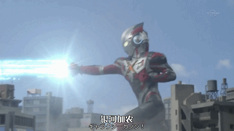
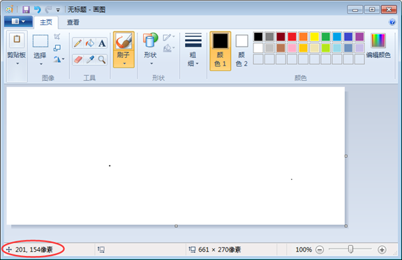

奥特曼打小怪兽，在需要的时候触发大招行为，那么“需要的时候”其实就是指事件。
当奥特曼即将被打趴下（事件被触发）的时候就会发大招（执行函数）。
在一个程序中，我们决定做了用户做了事情之后该做什么
事件的原理和hover类似。可以做到:hover做不到的事，:hover只能操作当前的元素，但是事件绑定之后可以选择任何元素。
事件触发三要素：通过谁触发？ 通过什么触发？触发后要做什么？
事件的写法：
w3c标准：事件写在行内，但是因为结构和行为要分离，所以我们一般情况下用JavaScript的方法来绑定事件，只有再极少数情况下，才将事件写在行内，事件的绑定方法：
浏览器中的节点(对象).on+事件句柄 = function( ){
要干什么？（放在浏览器中，不执行，当事件发生的时候再执行。）
}
oDiv.onclick=function(){
alert（1）
}
事件总结：事件是给浏览器定义一个预处理函数，当事件触发的时候，执行函数，这就是事件。
当事件被触发的时候奥特曼会得到一个信息（事件对象），包含了跟事件相关的一些属性和方法的封装（如：事件发生的元素、键盘按键的状态、鼠标的位置、鼠标按钮的状态等），只有事件在触发的时候才会得到。
oDiv.onmousedown=function(e){
alert（e）;
}
JS缺德定律：事件对象有兼容问题；
所以我们先做好兼容再去使用事件对象：
e=e || window.event;
alert (e.buttons)观察.buttons的返回值；
鼠标事件及方法；
属性名 | 含义 |
e.buttons | 返回鼠标点击按键（1左键，2右键，4中键滚轮） |
e.offsetX / offsetY | 获取事件触发最近的盒子（事件源）的坐标 |
e.clientX / clientY | 获取可视区的坐标（根据浏览器的定位） |
e.screenX / screenY | 获取整个屏幕的坐标 |
e.pageX / e.pageY | 获取文档的坐标（包含滚动条） |

键盘事件：keydown、keyup、keypress
document.onkeydown = function(e){
console.log(e.keyCode)
}
键盘上每一个键都有一个唯一的编码，用来识别当前用户正在操作的是键盘上哪一个键
有兼容问题
e.keyCode || e.which
特殊键码：是否按下alt ctrl 和 shift
e.altKey
e.ctrlKey
e.shiftKey
返回值是布尔值；
可以用来判断组合键
if（e.keyCode==13&&e.altKey）{
alert('同时按下了enter和alt')；
}
练习
一串内容跟随鼠标
小键盘控制元素上下左右移动
默认行为（浏览器）
有一些html元素默认的行为，比如说a标签，点击后有跳转动作；form表单中的submit类型的input有一个默认提交跳转事件；reset类型的input有重置表单行为。
但是，有些时候我们是不需要默认事件的，所以就需要阻止默认事件
return false；
if(e.preventDefault) {
e.preventDefault();
}else {
window.event.returnValue = false;
//return false;
}
1、右键菜单（上下文菜单） oncontextmenu
2、表单提交事件 onsubmit
练习
1、输入框默认提示，模拟 placeholder
2、表格即时编辑
3、输入框模拟select下拉菜单
4、聊天对话框
事件流
子元素的事件被触发时，父级也会被触发（冒泡）
一个完整事件流包含 捕获阶段 ---> 目标阶段 --->冒泡阶段